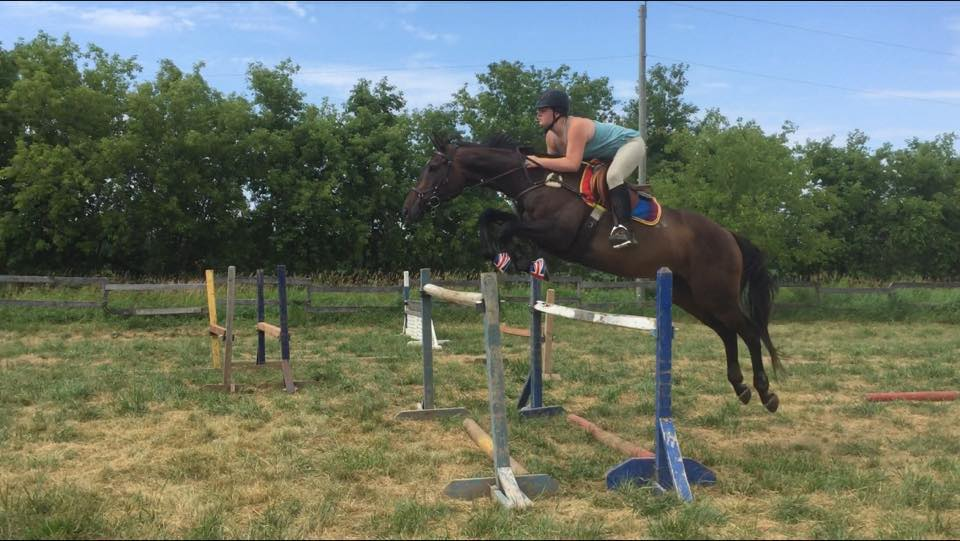

Emma Snider
About Me
My name is Emma Snider. I have been around the sun 18 times, throughout those 18 years I have pursued many hobbies. Mostly crafty things like sewing, crocheting, beading, painting and such; most outstanding though is the years I spent as a competitive horseback rider. I have been riding since I could walk but hung up my helmet before moving to Ottawa to pursue a college degree and career.
I am super happy to be here pursuing another side of my interests. Since I started high school my electives have been split between technology and arts credits. It was really hard to be a girl in tech classes. I was usually the only in each of those classes, especially my computer science classes. I persevered through and came out on top of every class, even graduating with a 95% average. Here I get to be creative while playing on computers, a dream come true.
“I am not afraid of storms, for I am learning how to sail my ship.”-Louisa May Alcott, Little Women
This paragraph is going to be some random stuff about me using all sorts of fun tags! First I don't drink enough H2O. Its a known fact, fold to me by several a health professionals. That sounds bad... a totally normal number of health professionals. I am also a but of an insomniac (I have been awake for 49 hours and counting)">, so if you recieve emails from me at 3:47am, that might be why. Whats an abbreviation I can throw in here? How about SCUBA, more fun facts, I always wanted to SCUBA dive but I am a big chicken! I love to swim when I am in Mexico, but as soon as anyone mentions SCUBA diving I am out.